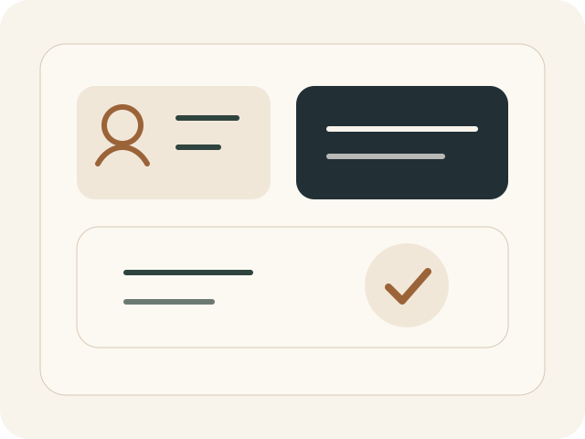

トラブル予防の視点を持つ
問題が起きてから対処するだけでなく、摩擦が起きやすい場面を事前に見抜き、 先回りして手当てする視点を共有します。
About Qualification
建築施工メディエーター（仮）は、建築・リフォームの現場で生まれる対人課題に向き合う力を、 実務の言葉で整理し、信頼につなげるための民間資格構想です。
Background

施工現場では、技術力や工程管理力と同じくらい、 人と人の間に立って状況を整える力が求められます。 しかし、その力は経験則として語られることが多く、資格や制度として明確に扱われる機会は多くありません。
建築施工メディエーター（仮）は、職人、顧客、近隣住民、元請けなど、 それぞれ立場の異なる関係者の間に起こる行き違いや摩擦に対して、 どのような姿勢と判断軸で向き合うかを整理し、実務者の信頼形成に役立てることを目指しています。
Role
問題が起きてから対処するだけでなく、摩擦が起きやすい場面を事前に見抜き、 先回りして手当てする視点を共有します。
事実だけでなく、相手の不安や立場を踏まえた伝え方を整え、 納得感のある対話を実現する力を重視します。
名刺や紹介時に、現場への向き合い方をひと目で伝えられるよう、 信頼の裏づけとしての役割を持たせます。
Target
リフォーム業、施工管理、現場監督、元請け調整など、 人と人の間に立つ場面が多い方を主な対象としています。
工事内容だけでなく、説明や対応の姿勢で信頼を築きたい方に向けた考え方です。
Operation
建築施工メディエーター（仮）は、PaitsHome（パイツホーム）が運営する構想です。 現場実務の延長線上で培ってきた知見をもとに、対人対応の重要性を言語化し、信頼につながる形で社会に示すことを目指しています。
代表は松岡 佑弥です。机上の理論だけでなく、実際の現場で起きる摩擦や行き違いに向き合ってきた経験を土台に、 資格の方向性や教材設計を進めています。
Difference
Next Page
教科書、講習、認定、更新制度の考え方を、現時点での構想としてまとめています。